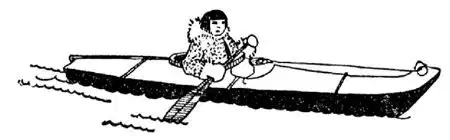

39
The Great Danes
伟大的丹麦人

WHEN anything annoyed my uncle he used to cry out, “Skagerrack and Kattegat !” It sounded terrible, for I didn’t know then that Skagerrack and Kattegat were merely the names of the narrow waterway around Denmark from the North Sea into the Baltic Sea and that Kattegat simply meant “the cat’s throat” and Skagerrack meant “Skager throat.”
There are two chief pieces to Denmark. One piece is the thumb-like land called Jutland, because a people called the Jutes used to live there. The other piece is a little island right alongside of Jutland called Zealand. You don’t have to be a good guesser to know that Zealand means “Sea Land.” On this island is Copenhagen, the capital of Denmark. Copenhagen means “Merchants’ Harbor,” because merchants with their ships used to stop there on the way from the North Sea to the Baltic. But there are not as many ships now as there used to be, for instead of going through the Skagerrack and Kattegat, many ships take the short cut through the Kiel Canal. Copenhagen is the only big city that Denmark has—there are no other large cities.
You probably have heard of a “Great Dane,” a kind of big dog that comes from Denmark. But the people in Denmark are called Danes, and there is one great Dane whom you probably know and whose stories you have probably read. He wrote “The Little Match Girl” and “The Ugly Duckling.” The man who wrote those fairy-tales lived in Copenhagen. His name is Hans Christian Andersen. The Danes like the name “Christian.” Ten of their kings have been named Christian.
But over a thousand years ago the Danes were not Christians, and many were pirates who sailed the seas and robbed other lands. They are now, of course, no longer pirates; but they are still great sailors. In some towns almost every person is either a sailor, a ship-builder, or connected with shipping in some way.
The Danes who stay at home are chiefly engaged in the butter and egg business. They raise cows to make butter and chickens to lay eggs and they send butter and eggs to other countries that haven’t enough. Danish eggs have the date when they are laid stamped on them, so that every one may know how fresh or how old they are. Danish butter is so good and brings such high prices that the Danes send most of it away, and they themselves usually eat an imitation butter made out of fat or grease.
Denmark is one of the healthiest countries in the World. People live longer there than in almost any other country; so the moral of this is, if you want to live long, go to Denmark.
Denmark, though such a little country, used to own two islands that were perhaps ten times as big as itself. These two islands are far away from Denmark in the cold north; one is a little island called Iceland and the other is a big island called Greenland. Greenland still belongs to Denmark, but Iceland no longer does. Most people cannot see why Denmark should want either island, for Iceland is full of volcanoes and many hot springs—which seems strange, for ice and fire do not seem to go together—and Greenland is chiefly ice. I think it would be more exact if Greenland were called Iceland and Iceland were called Volcano Land. I used to know a boy who was very fat, but all his friends called him “Skinny.” That is like calling this ice-covered land Greenland, so I think it was called Greenland for a joke. Only along one edge of Greenland do we find any land at all showing. The ice in Greenland is about a quarter of a mile thick, covering the land, and where the ice comes down to the water’s edge big chunks often as big as a church break off and float away in the sea. They are then called icebergs, which means ice mountains.
There are Eskimos living in Greenland. You may well wonder what the Eskimos in Greenland live on, for they can’t raise any of the vege-tables we have to eat. They live chiefly on fish out of the sea and animals and birds. There are millions of birds called “auks” which fly so low and so thick over the land that the Eskimos catch them with a net as you would catch butterflies. They can catch enough to last them for many months, and as all out-of-doors is a refrigerator the birds that are caught can be kept on ice without having the ice man call every day. Eskimos use the auk’s soft feathers to line their clothes to keep themselves warm and comfortable, for the thermometer sometimes goes to seventy de-grees below zero. Another bird, the eider-duck, has still softer feathers. They are called “down.” Eider-down is one of the softest and lightest things imaginable and makes the best filling for bed quilts, as it is both light and warm. Eskimos eat the eider-duck’s eggs, too, and they gather thousands of them at a time.
Instead of beef, the Eskimo eats the flesh of an animal called the musk-ox. The musk-ox has hooklike horns and a shaggy long-haired coat to keep himself warm in the terrible cold. His coat makes him look big, but when he is killed and the coat removed, there is only a poor little lean animal left inside.
There is another animal which the Eskimo hunts. It lives both in the water and on the land and has tusks like an elephant. It is called a walrus. It is also caught for meat, but chiefly for its ivory tusks, which are two big teeth that hang far down out of its mouth.
What the Eskimo likes best to eat, however, is not lean meat but fat. A big, greasy strip of fat to him is as delicious as a banana to us. Fat food keeps people warm, and nature in its wonderful way makes fat taste good to the Eskimo because it makes him warm. People in warm countries don’t like fat food because it would make them warm when they want to be cool.
One of the most valuable furs that ladies wear is made from the coat of the seal, another animal that lives both in the water and on the ice. The Eskimo uses the sealskin to make his tents in which he lives in the summertime. The winds are so terribly strong in parts of Greenland that a tent has to be anchored down by heavy stones to keep it from blowing away. In the wintertime, however, the Eskimo makes his hut of blocks of stone—if he can find any; but if he can’t, he cuts blocks of snow and makes a bowl-shaped house of that instead. Of course, his house is hardly large enough to stand up in and has only one room and no windows, so that he has to light it inside with a fire built right on the ground, or by a lamp made out of a hollowed stone with a wick soaked in the grease or fat of the animals he has killed.
The only tame animals the Eskimo has are the Eskimo dogs, which look very much like wolves and may be cousins of the wolves. The Eskimo uses dogs hooked up to his sled, instead of a horse and carriage or automobile. Four or eight or more dogs are harnessed together and make a team. Almost all of our dogs love water; they will run and jump into a pool or into a river if given half a chance. But the Eskimo dog is afraid of water, and though he can swim he will not go into it unless he is whipped into it, and not even then if he can run away. The Eskimo, however, is not afraid of the water even when blocks of ice are floating in it. He has a canoe called a kayak which is completely covered, all except a place in the center where he sits and paddles. It is water tight, so that even when upset no water can get in. The Eskimos are experts at paddling, and they have water sports in which an Eskimo upsets his kayak on purpose and rolls over and over in the water just to show off.

eskimo in his kayak （爱斯基摩人和海豹皮船）
【中文阅读】
我叔叔烦恼时，他常常大声叫喊：“斯卡格拉克和卡特加特！”听起来可怕极了，因为那时我不知道“斯卡格拉克和卡特加特”指的是环绕丹麦的从北海到波罗的海的狭窄水道。“卡特加特”的意思是“猫的咽喉”；“斯卡格拉克”的意思是“斯卡格的咽喉”。
丹麦主要由两部分组成。一部分是拇指般的日德兰半岛（Jutland），一个名叫朱特（Jutes）的民族曾经居住的地方。另一部分是紧邻日德兰半岛的叫雪兰（Zealand）的小岛。你一定猜不出，“雪兰”的意思是“海上的陆地（Sea Land）”。丹麦的首都哥本哈根就在这座小岛上。哥本哈根的意思是“商人的海港”，因为从北海到波罗的海的商人们常常将商船停靠在这里。但是现在这里不像以前那样有很多的船了，因为许多船都不再走“斯卡格拉克和卡特加特”，而抄近路改走基尔运河。哥本哈根是丹麦仅有的大城市——丹麦再没有比它更大的城市了。
你可能听说过“大丹狗”（Great Dane），一种来自丹麦的大狗。丹麦人也叫“Dane”，有一个伟大的丹麦人你很可能知道，而且，他写的故事，《卖火柴的小女孩》和《丑小鸭》，你也很可能读过。写这些童话故事的人就住在哥本哈根，他的名字叫汉斯 · 克里斯蒂安 · 安徒生。丹麦人喜欢“克里斯蒂安”这个名字（它是“基督徒”的意思），曾有十个丹麦国王都叫克里斯蒂安。
但在一千多年前，丹麦人并不信仰基督，他们当中许多人都是航行在大海上并到其他国家抢劫的海盗。当然，他们现在不再是海盗了，但他们仍然是很优秀的水手。在一些小镇上，几乎每个人都是水手，或制造船只，或从事其他与船有关的职业。
那些待在家里的丹麦人主要从事黄油和鸡蛋生意。他们养牛来获得黄油，养鸡来获得鸡蛋，然后把黄油和鸡蛋卖给那些缺乏这些东西的国家。丹麦的鸡蛋上都印有这个蛋生下来的日期，所以每个人都可以知道这个蛋是多么的新鲜，或是多么的不新鲜。丹麦的黄油由于品质好而价格高，所以大部分都被丹麦人卖了，他们自己通常吃的是由脂肪或油脂制成的仿乳酪。
丹麦是世界上最健康的国家之一，生活在那里的人几乎比其他任何国家的人都要长寿。所以从某种意义上来说，如果想长寿，就去丹麦吧。
丹麦尽管很小，但它曾经拥有两个比现在大十倍的岛屿。这两个岛屿在远离丹麦的寒冷的北方，一个是被称为“冰岛”的小岛，另一个是被称作“格陵兰岛”的大岛。格陵兰岛现在仍属于丹麦，但冰岛却不再属于丹麦了。大多数人都不明白丹麦为什么想要这两个岛屿中的任何一座岛，因为冰岛满是火山，还有许多温泉——这似乎很奇怪，因为冰和火似乎不能在一起——而格陵兰岛则主要是冰。我认为，把格陵兰岛叫做“冰岛”，把冰岛叫做“火山岛”会更准确一些。我曾经认识一个小男孩，很胖，但他所有的朋友都叫他“皮包骨”。这很像人们把冰雪覆盖着的格陵兰岛叫做“绿色的大陆”（Greenland），所以我认为将其称为“格陵兰”是在开玩笑。我们只能在格陵兰岛大陆边缘的一侧看到 完全裸露的土地。格陵兰岛上的冰大约有1/4英里那么厚，而且常常有像教堂那么大的大冰块掉到水里，并漂流到海里，它们被称作冰山，意思是“冰的山”。
格陵兰岛上生活着爱斯基摩人。你也许很好奇，格陵兰岛上的爱斯基摩人靠什么为生，因为他们无法种植我们所吃的任何一种蔬菜。爱斯基摩人主要以海里的鱼、动物和鸟类为食。那里有一种叫“海雀”的海鸟，非常多，成百上千万，它们成群成群地飞得很低。爱斯基摩人就用网捕捉它们，就像你用网捕捉蝴蝶一样。他们可以抓到足够多的鸟来维持好几个月的生活，而且户外就是冰箱，捕捉到的鸟可以放在冰上贮存，而不用让卖冰的人每天都来。爱斯基摩人用海雀柔软的羽毛做衣服的衬里来保暖，穿起来也很舒适，因为气温有时候会达到零下70多度。另外一种鸟，绒鸭，有更柔软的、叫做“绒”的羽毛，鸭绒是你可以想象的最软和最轻的东西之一，是棉被的最佳填充物，因为它既轻又保暖。爱斯基摩人也吃绒鸭的蛋，他们一次可以搜集到上千只蛋。
爱斯基摩人吃的是一种叫麝牛的肉，而不是我们吃的那种牛肉。麝牛长着钩子状的角，长长的粗浓蓬松的体毛可以在极度寒冷的时候为它们抵御寒冷。它的皮毛让它看起来体格很庞大，但是，当它被杀死，剥了皮之后，看起来却是一只又瘦又小、非常可怜的动物。
爱斯基摩人还猎食另外一种动物，这种动物既生活在水里也生活在陆地上，还像大象一样长有一对长牙。人们称之为“海象”。爱斯基摩人捕捉海象不仅是为了它的肉，更是为了它白色的牙——两只露在嘴外面的长长的大獠牙。
爱斯基摩人最爱吃的不是瘦肉而是肥肉。对他们来说，一长条油腻的肥肉，就像香蕉对于我们来说一样，是绝对的美味。富含脂肪的食物可以帮助人们保持温暖。大自然以她神奇的方式让肥肉变为爱斯基摩人的美食，因为肥肉可以使他们感到温暖。生活在气候温暖的国家的人则不喜欢肥肉，因为肥肉使他们在需要凉爽的时候感到浑身发热。
女士们穿的最有价值的皮毛之一是海豹的皮毛。海豹是另一种既生活在水里也生活在冰上的动物。爱斯基摩人用海豹皮来制作他们夏季居住用的帐篷。在格陵兰岛，有些地方会刮剧烈的大风，所以你得用很重的石头来固定帐篷以免它被风刮跑了。然而，在冬季，如果能找到石头的话，爱斯基摩人会用石头来建造小屋。如果找不到石头，他们就切下坚硬的雪块来建造一座碗状的房子。当然，房子几乎不足一人高，并且只有一个房间，还没有窗户，所以爱斯基摩人不得不在地面上点火来照明，或者用一盏油灯，这个油灯是用空心的石头做 的，灯芯是在他所杀死的动物的油脂或脂肪中浸泡过的。
爱斯基摩人所饲养的唯一温顺的动物是爱斯基摩犬，他们看起来非常像狼，也许就是狼的表亲。爱斯基摩人将爱斯基摩犬，而不是马，拴到雪橇上，就成了他们的马车或汽车。四只、八只或更多的爱斯基摩犬套在一起，组成一队。几乎所有的狗都喜欢水，如果有一点点的机会，就会跳进水池里或河里嬉戏。但是爱斯基摩犬却怕水，尽管会游泳，也不会跳进水里，除非你用鞭子赶它；如果它们能逃脱的话，就不会下到水里。爱斯基摩人不怕水，即使有大块大块的冰漂浮在水里的时候，他们也不怕。爱斯基摩人有一种被称作“海豹皮船”的独木舟，除了在它的中心部位留一块位置供人坐下和划桨外，其余部分完全密封，并且是防水的，所以即使打翻了，水也进不去。爱斯基摩人是划桨的专家，他们有自己的水上运动项目——故意将皮船打翻后在水中翻滚，只是为了炫耀他们的划桨技能。